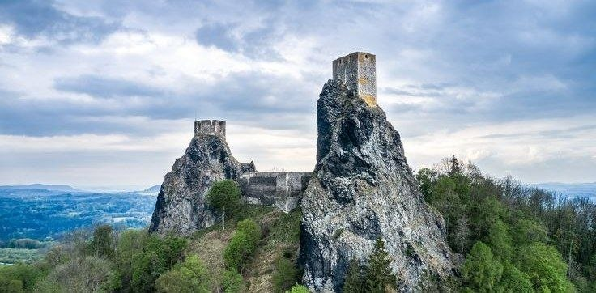
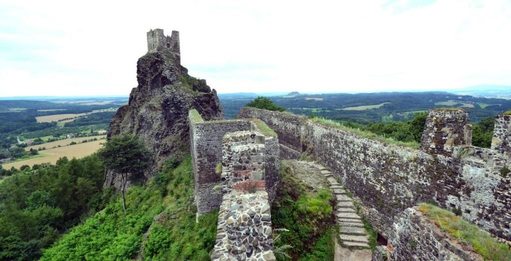
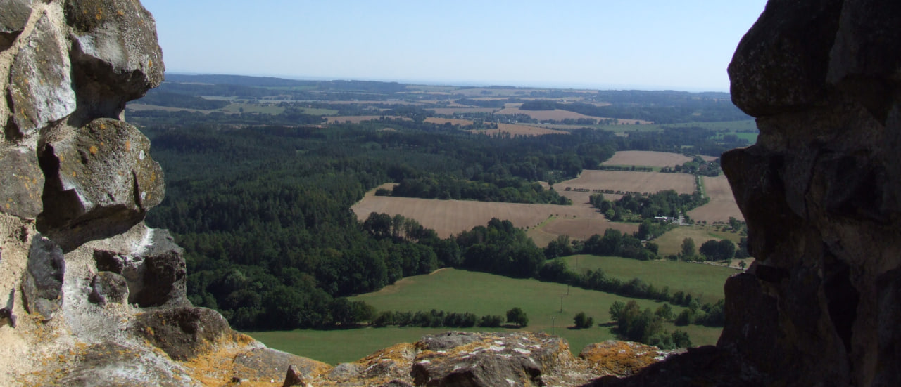

Замок Троски (Trosky) — средневековый фортификационный комплекс XIV века, расположенный в заповеднике Чешский Рай в 90 километрах к северо-востоку от Праги.
Крепость возведена на вершине двух базальтовых скальных выходов (некков), образовавшихся в результате вулканической активности. Высота природного холма составляет около 483 метров над уровнем моря, а сами скалы возвышаются над окружающим рельефом еще на 40–50 метров. Благодаря такому расположению гарнизон цитадели полностью контролировал стратегические торговые пути, проходившие по долине.
Общие сведения и географическое положение
Строительство замка на базальтовых останцах потребовало уникальных инженерных решений. В отличие от большинства европейских замков, возводившихся на единой плоской площадке, Троски разделен на три изолированные части: две высотные башни на скалах и жилой двор, расположенный в седловине между ними.
Стены сооружались из блоков темно-серого базальта, добываемого прямо у подножия массива. Это обеспечило высокое сцепление кладки с природной скалой и сделало рубежи практически неприступными для стенобитных орудий того времени.
Сводка данных
- Период постройки: 1380–1390 гг.
- Первый владелец: Ченек из Вартенберга
- Высота башни «Бабка»: 47 метров
- Высота башни «Панна»: 57 метров
- Материал стен: Вулканический базальт, песчаник
Геологический форпост
Базальтовые некки (выступы) скалы представляют собой отвердевшую магму, застрявшую в жерле древнего вулкана. Вертикальные базальтовые столбы обеспечили природную крутизну склонов, предотвращавшую подкопы и использование штурмовых башен, что делало крепость крайне устойчивой к осадам.
История замка Троски
История крепости охватывает несколько веков военных конфликтов, смены дворянских родов и периода полного заброса.
1380–1390 гг. — Строительство цитадели
Влиятельный чешский вельможа Ченек из Вартенберга закладывает крепость для защиты своих земельных владений. На двух скалах возводятся каменные башни, а в перемычке между ними выстраивается укрепленный господский дом и хозяйственный двор.
1399 г. — Переход во владение рода фон Бергов
Из-за финансовых долгов Ченек из Вартенберга уступает замок Оту Младшему из Бергова. Новый владелец укрепляет внешние стены и расширяет гарнизон.
1424–1428 гг. — Осады в период Гуситских войн
Владелец замка Ота III оставался верным католической стороне. В 1424 и 1428 годах гуситские войска под предводительством Яна Жижки и других воевод предпринимают попытки захвата Троски. Замок выдерживает все длительные осады и штурмы благодаря автономной системе водоснабжения и неприступности скал.
1440–1445 гг. — Захват рыцарем-разбойником
В ходе феодальных междоусобиц замок захватывает отряд рыцаря-разбойника Яна Шофа из Хелфенбурга. Твердыня на несколько лет превращается в опорную базу для набегов на купеческие караваны и соседние деревни, пока не была выкуплена обратно господами из Шелмберга.
XVI век — Потеря статуса резиденции
С развитием артиллерии и изменением стандартов комфорта замки на крутых скалах теряют актуальность. Владельцы из рода Лобковиц и Вальдштейн переезжают в более удобные равнинные усадьбы, а Троски используется лишь как административный центр и склад.
1648 г. — Разрушение в Тридцатилетней войне
В ходе военных действий шведские войска под командованием генерала Торстенссона захватывают замок, полностью разграбляют его и поджигают деревянные перекрытия. После этого пожара Троски окончательно забрасывается и превращается в руины.
XIX–XXI века — Реставрация и туризм
В 1840-х годах новый владелец граф Алоис Лекси фон Эренталь начинает первые работы по консервации каменных стен и постройке лестницы на башню «Бабка». В XX века замок переходит в собственность государства и получает статус национального памятника культуры Чехии.

Архитектурная структура и оборонительные системы
Оборонительный комплекс замка был построен по принципу многоуровневой эшелонированной защиты. При строительстве были учтены перепады высот и природный рельеф.
Башня «Бабка» (Западная)
Высота скалы составляет 47 метров. На ее вершине была сооружена двухэтажная пятиугольная башня. Ввиду большей площади вершины здесь размещались основные оборонительные орудия и жилые помещения для начальника гарнизона.
Башня «Панна» (Восточная)
Стоит на скале высотой 57 метров. Башня имела стройную восьмиугольную форму и высоту около 30 метров. Она выполняла функцию главного наблюдательного пункта (донжона) и последнего рубежа обороны.
Система ворот и дворов
Дорога к замку проходила через трое последовательных ворот, укрепленных палисадами и подъемными мостами. Первый двор содержал конюшни и кузницу, второй — дворец владельца и цистерны для дождевой воды.
Особое значение имело водоснабжение: из-за базирования на базальте бурение колодцев было невозможным. В скале высекли массивные резервуары для сбора осадков с фильтрацией через слой песка и угля, что позволяло выдерживать осады продолжительностью до нескольких месяцев.

Исторические предания и фольклор
Необычный внешний вид руин и изолированность башен стали причиной возникновения нескольких местных преданий, зафиксированных чешскими этнографами в XIX веке.
«Строительство замка на двух раздельных вершинах раскололо не только скалу, но и сам род владельцев, превратив башни в символы вечного противостояния...»
Народное поверье объясняет названия башен «Бабка» и «Панна» враждой двух женщин из рода берговцев — пожилой свекрови Барборы и молодой невестки Катержины. По преданию, из-за религиозных и личных разногласий они заняли противоположные башни замка и общались исключительно выкриками через пропасть, пока замок не был разрушен во время войны.
Существует предание о подземных туннелях, высеченных в базальте и ведущих от замка к песчаниковым пещерам в районе ущелья Аполлена. Археологические исследования подтвердили наличие обширных подвальных помещений под основным двором, однако сквозные выходы за пределы холма не были обнаружены.
В XV веке, во время оккупации замка рыцарем-разбойником Шофом (Швемликом), в подземельях якобы были спрятаны разграбленные сокровища из окрестных монастырей. До сих пор среди обвалившихся подземных ходов спелеологи находят заваленные залы, требующие расчистки.
Современное состояние и посещение
В настоящее время замок Троски находится под управлением Национального института охраны памятников Чехии (Národní památkový ústav) и открыт для экскурсий с апреля по октябрь.
Смотровые площадки
На башне «Бабка» оборудована смотровая терраса. К башне «Панна» ведет стальная лестница, возведенная внутри оригинального ядра стены. С площадок просматриваются Крконоше, Ештед и ландшафты Чешского Рая.
Мероприятия и исследования
На территории внутреннего двора регулярно проходят исторические реконструкции, соколиная охота и фестивали средневековой культуры. Консервационные работы ведутся без изменения оригинального профиля базальтовых стен.